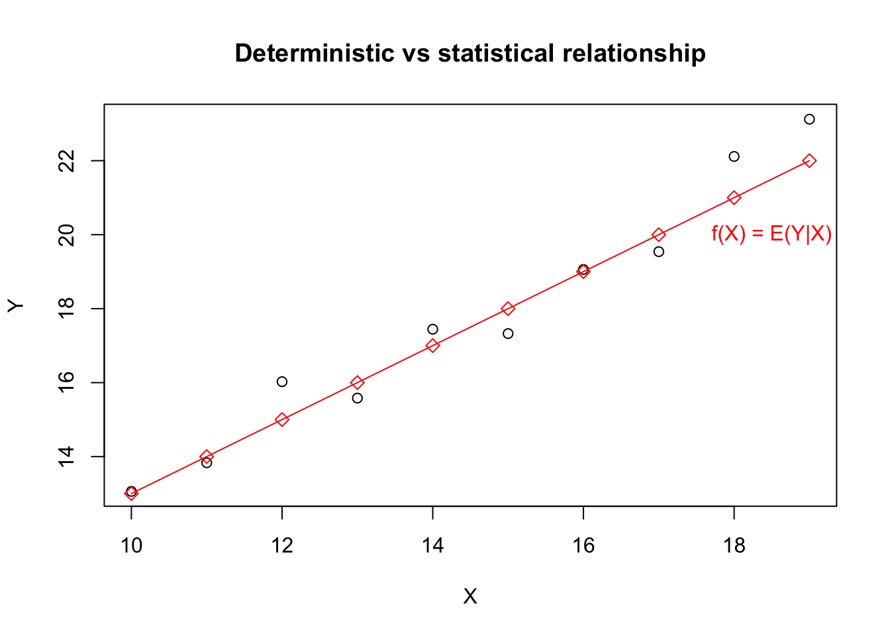

Goal is to determine if and how one variable is related to a set of other variables.
Variables
Response variable, denoted \(Y\), represents an outcome whose variation is being studied.
Explanatory variable, denoted \(X\), represents the causes (i.e. potential reasons for variation).
Two types of relationships
Functional (deterministic) → There is an exact relation between two variables (have the form \(y = ax+ b\)).
Statistical (probabilistic) → There is not an exact relation because there are other variables that affect the relationship (have the form \(y = ax + b + \epsilon\)).
Regression models and their uses
Statistical models quantify the relationship between a response variable (i.e. a random variable) and explanatory variables, which are usually assumed to be deterministic (i.e. known exactly).
Elements of a statistical regression model
In general, observations do not fall directly on the curve of a relationship.
\(Y \mid X\) has a probability distribution.
\(E(Y \mid X)\) varies deterministically with \(X\).
So the statistical model is:
\[
\begin{align*}
Y &= E(Y \mid X) + \epsilon \\
&= f(X) + \epsilon, \hspace{20pt} \text{where $\epsilon$ has some distribution}
\end{align*}
\]
Two components of a statistical model:
\(f(X) = E(Y \mid X)\) → Defines relationship between \(Y\) and \(X\); explains the average behavior of the response.
\(\epsilon\) → An element of randomness (i.e. error). This contains the variation that \(f(X)\) cannot explain and/or that is of no interest.
This means \(f(X) = E(Y \mid X)\) will be the same for all samples with the same \(X\) values. The only thing that changes is the random error \(\epsilon\) and as a result \(Y\). Example \(Y = 3 + 1X + \epsilon\):
Code
# create regression data frame to show different the deterministic and statistical relationships (assuming SLR normal error model for demonstration so can visualize)# generate# -> X values (not from a random dist)# -> f(X) = E(Y | X) = beta_0 + beta_1 X demonstration# -> random error = epsilon ~ N(0,1)# -> Y = f(X) + epsilonbeta_0<-3beta_1<-1data_ships<-data.frame(X =seq(from =10, to =19, by =1))%>%mutate(f_X =beta_0+beta_1*X, epsilon =rnorm(n =nrow(.), mean =0, sd =1), Y =f_X+epsilon)# display datadata_ships%>%display_nice(col.names =c("X", "f(X) = E(Y | X)", "$epsilon ~ N(0,1)", "Y = f(X) + epsilon"))
X
f(X) = E(Y | X)
$epsilon ~ N(0,1)
Y = f(X) + epsilon
10
13
-0.568
12.432
11
14
-0.664
13.336
12
15
-0.301
14.699
13
16
-0.480
15.520
14
17
-0.975
16.025
15
18
-1.170
16.830
16
19
0.275
19.275
17
20
0.017
20.017
18
21
-0.258
20.742
19
22
1.642
23.642
Code
# plot (X, Y)# -> and add points and line for E(Y | X)# --> population E(Y | X)) because using known betas (not estimating from sample data)data_ships%$%plot(x =X, y =Y, type ="p", main ="Deterministic vs statistical relationship")data_ships%$%points(x =X, y =f_X, col ="red", pch =5)data_ships%$%lines(x =X, y =f_X, col ="red")text(x =18.5, y =20, labels ="f(X) = E(Y|X)", col ="red")

Construction of statistical regression models
Selection of predictor variables (how to decide which ones?).
Use of outside information, historical knowledge, and/or experience.
Exploratory data analysis.
Variable selection techniques → Find a subset of important variables (i.e. practical and easy to find).
Functional form of the regression relation (what is form of \(f(X)\)?).
< based on same info as (1) >
If there is an abundance of data, maybe start with more complex models and then simplify.
Scope of model (when is the model useful?).
When the model best predicts or describes the relationship between response and predictor variables.
Uses of statistical regression models
Determining whether an \(X\) “affects” \(Y\) or not.
Estimation of impact of a given \(X\) on the \(Y\).
Estimation of the mean of \(Y\) for a given \(X\) value.
Prediction of a single value of \(Y\) for a given \(X\) value.
Typical strategy for regression analysis
1.1.1 Simple linear regression model (SLR)
Goal of SLR
Investigate the relationship between \(Y\) and a single numeric independent variable \(X\), assuming that, in the population, the mean of \(Y\) is linearly related to the value of \(X\).
Population relationship → \(Y = \beta_0 + \beta_1 X + \epsilon\).
Holds for all \(n\) values in the random sample of \(n\) pairs of values, \((X_i, Y_i), \, i = 1, \ldots, n\).
\(Y_i\) → Dependent (or response) variable value. These are independent, but not identically distributed.
\(X_i\) → Independent (or predictor) variable value. These are not random variables, rather known constants.
\(\epsilon_i\) → Random error term, assumed to have mean zero and variance \(\sigma^2\). \(\mathrm{Cov}(\epsilon_i, \epsilon_j) = \mathrm{Corr}(\epsilon_i, \epsilon_j) = 0\) for all \(i,j : i \ne j\). Often, the \(\epsilon_i\) are assumed to be independent and identically distributed \((iid)\), i.e. all have the same distribution with the same mean and variance.
\(\beta_0\) and \(\beta_1\) → Fixed but unknown regression parameters that need to be estimated.
\(\sigma^2\) → Another parameter that needs estimated, but it is technically not a “regression” parameter since it does not determine the relationship between \(Y\) and \(X\) (i.e. it only deals with randomness).
Note that \(Y_i\) and \(\epsilon_i\) are random variables and therefore have distributions. Thus, discussing their mean and variances are appropriate.
Alternate (equivalent) version of regression model
Mean of \(Y_i\) for given \(X_i\) → \(E(Y_i) = \beta_0 + \beta_1 X_i\)
Variance of \(Y_i\) for given \(X_i\) → \(V(Y_i) = \sigma^2\)
Interpretation of regression parameters \((\beta_0, \beta_1)\)
\(\beta_0\)
\(Y\)-intercept of the regression line and gives \(Y\)’s mean when \(X = 0\) → \(E(Y \mid X = 0) = \beta_0 + \beta_1 \cdot 0 = \beta_0\)
Only makes sense to interpret when \(X=0\) is within the scope of the model. So, ask two questions when deciding whether or not to interpret:
Does it make sense to interpret in context?
Do we have data in the proximity of zero?
If answer “no” to either of these, then no need to interpret the intercept.
\(\beta_1\)
Slope of the regression line and indicates the change in \(Y\)’s mean when \(X\) increases by one unit → \(E(Y \mid X = x^* + 1) - E(Y \mid X = x^*) = [\beta_0 + \beta_1 (x^* + 1)] - [\beta_0 + \beta_1 x^*] = \beta_1\)
Determines whether a relationship exists between \(Y\) and \(X\).
Note that regression does not substantiate or prove a cause-effect relationship. Rather it gives evidence that \(Y\) and \(X\) are related (but not that \(X\) “causes” the value of \(Y\)).
Model scope (and the dangers of extrapolation)
The structural form of the relationship may not be the same as you move away from the observed predictor space. Therefore, using \(\hat{Y}\) for estimation / prediction at \(X\) values outside of model scope would be extrapolation and results are not reliable.
Should collect data from the entire region of predictor values of research interest.
Estimators
Purpose
Estimators help us make inferences about population parameters.
Each estimator corresponds to a population parameter (e.g. \(\hat{\beta}_1 \rightarrow \beta_1\)).
Estimator / estimate distinction
Estimators are based on formulas (e.g. \(\bar{X} = \frac{1}{n} \sum X_i\)).
Estimates are values computed from estimators.
Good estimators
Bias of an estimator is the difference between the estimator’s expected value and the true value of the parameter being estimated:
If the bias equals zero, the estimator is said to be unbiased. \[\text{Bias} = E(\hat{\theta}) - \theta\]
e.g. \(\bar{X}\) and \(\mu\) → \(E(\bar{X}) \overset{\surd} = \mu\).
Another way to think about it → \(E(\bar{X})\) will be the center of the sampling distribution of \(\bar{X}\) (which will be approximately normal because of the central limit theorem), and we want this to equal \(\mu\).
The standard deviation of an estimator is referred to as the standard error of said estimator.
Ideally, estimators will have relatively small standard deviations, in which case they are said to be efficient.
1.1.2 Estimation of the regression function
Setup
For each point we have an observed value \(Y_i\), a fitted value \(\hat{Y}_i\) and a residual \(\hat{\epsilon}_i\).
Fitted regression function → \(\hat{Y_i} = \hat{\beta}_0 + \hat{\beta}_1 X_i\), where \(\hat{\beta}_0\) and \(\hat{\beta}_0\) are estimators of \(\beta_0\) and \(\beta_1\), respectively.
Goal
Goal is to estimate the two “regression” parameters \(\beta_0\) and \(\beta_1\).
There are several methods to do this.
1.1.3 Method of least squares
Overview
The method of least squares is one way to find “good” estimators of the regression parameters \(\beta_0\) and \(\beta_1\).
For each observation \((X_i, Y_i)\), this method considers the model error term, which is the deviation of \(Y_i\) from its expected value:
According to the method of least squares, the point estimators (functions of the random sample that estimate population quantities) of \(\beta_0\) and \(\beta_1\) are those values \(\hat{\beta}_0\) and \(\hat{\beta}_1\), respectively, that minimize the criterion \(Q\) for the sample observations \((X_1, Y_1), \ldots, (X_n, Y_n)\).
Once data is collected, the estimates (realized values) for \(\hat{\beta}_0\) and \(\hat{\beta}_1\) are calculated based on the observed sample \((x_1, y_1), \ldots, (x_n, y_n)\). (Note: no good notation for this, maybe \(\hat{b}_0\) and \(\hat{b}_1\); similar idea for means: \(\mu\), \(\bar{X}\) and \(\bar{x}\))
Least squares estimators
These can be found in two ways.
Numerical methods (optimization) → Search procedures to systematically evaluate the least squares criterion \(Q\) for different estimates \(\hat{\beta}_0\) and \(\hat{\beta}_1\) until the ones that minimize \(Q\) are found.
Analytical methods → Using calculus. The analytical approach is feasible when the regression model is not mathematically complex.
The general process for deriving the least squares estimators of any model is:
Write \(Q\) as a function of the model error term \(\epsilon_i\) as shown above.
Take derivative with respect to the desired parameter \(\beta_i\).
Set derivative equal to zero (notation: substituting population term \(\beta_i\) for its estimator \(\hat{\beta}_i\)) and solve for \(\hat{\beta}_i\).
Check second derivative test to ensure global minimum (take derivative from result of step 2)
Using the analytical approach with the SLR model, we have the following results:
Note: We did not have to assume any distribution of the error term. These are the LSE estimators for any SLR model.
Demo:
First we can generate the sample data \((x_1, y_1), \ldots, (x_n, y_n)\).
Code
# simulate sample regression dataset from population model# -> E ~ Uniform(a, b)# -> Y = B0 + B1X + E# -> Y | X ~ Uniform(B0 + B1*X - a, B0 + B1*X + b)# initialize items# -> sample size, population parameters and error distribution parametersn<-30beta_0<-1beta_1<-2min<--2max<-2# generate X valuesx<-runif(n =n, min =5, max =15)# generate error terms# -> assumption for LSE is E(epsilon) = 0, so symmetric uniform about zero worksepsilon<-runif(n =n, min =min, max =max)# calculate y terms as function of x and error termsy<-beta_0+beta_1*x+epsilon
Then we can fit the model and visualize it on the scatter plot.
Code
# add regression line to plotplot(x =x, y =y)abline(lm(formula =y~x), col ="red")text(x =14, y =22, labels =bquote(hat(Y)*" = "*hat(beta)[0]+hat(beta)[1]*"X") , col ="red")
Finally we can get the estimates of \(\hat{\beta}_0\) and \(\hat{\beta}_1\).
# fit SLR model# -> lm() calls lm.fit() behind the scenes --> this performs a QR decomposition to fit the model, which is a more stable way to solve for LSEmod_slr<-lm(formula =y~x)# display estimated coefficientsmod_slr$coefficients
(Intercept) x
0.8453137 2.0064051
# or can docoefficients(mod_slr)coef(mod_slr)# alias for coefficients()
These are estimates of the population coefficients, so can compare above values to \(\beta_0\) = 1 and \(\beta_1\) = 2.
Programming note → Beautiful sites ((1) and (2)) explaining QR decomposition and how it relates to LSE; must go through and recreate at some point.
# calculate estimates for B0 and B1 using LSE formulas# -> b_1 = S_XY / S_XX# -> b_0 = Y-bar - b_1 X-bars_xy<-sum((x-mean(x))*(y-mean(y)))s_xx<-sum((x-mean(x))^2)b_1<-s_xy/s_xxb_0<-mean(y)-b_1*mean(x)
Code
# compare to results from lm()compare(c(b_0, b_1), mod_slr$coefficients)
$comparison
(Intercept) x
TRUE TRUE
$`c(b_0, b_1)`
[1] 0.8453137 2.0064051
$`mod_slr$coefficients`
(Intercept) x
0.8453137 2.0064051
# simulate sample regression through the origin dataset from population model# -> E ~ Uniform(a, b)# -> Y = BX + E# -> Y | X ~ Uniform(B*X + a, B*X + b)# initialize items# -> sample size, population parameters and error distribution parametersn<-30beta<-2min<--3max<-3# generate X valuesx<-runif(n =n, min =-5, max =5)# Y | X ~ Uniform(min = BX + a, max = BX + b)y<-runif(n =n, min =beta*x+min, max =beta*x+max)# plot sample data# add regression line to plot and reference line for originplot(x =x, y =y)abline(lm(formula =y~x-1), col ="red")abline(h =0, lty =2, col ="lightgrey")abline(v =0, lty =2, col ="lightgrey")text(x =3, y =-5, labels =bquote(hat(Y)*" = "*hat(beta)*"X") , col ="red")
Derivation of estimator:
# fit SLR model without interceptmod_noint<-lm(formula =y~-1+x)# display estimated coefficientcoefficients(mod_noint)
x
2.041284
# calculate estimate B using LSE formulab<-sum(x*y)/sum(x^2)
Code
# compare to results from lm()compare(b, coefficients(mod_noint))
$comparison
x
TRUE
$b
[1] 2.041284
$`coefficients(mod_noint)`
x
2.041284
Example 2
Regression through the origin with squared predictor variable: \(Y = \beta_1 X^2 + \epsilon\).
Sometimes a transformation can make deriving estimators easier. This way we can get the model in a familiar form and derive like usual (simpler). Then we just have to make the appropriate substitutions at the end in order to get the estimators for the original models.
This strategy lessens the number of models we have to know how to derive (note this is just for deriving; no need to do it when fitting models because it’s an extra middle step that doesn’t change anything, leads to equivalent results).
# simulate sample regression through the origin with squared predictor dataset from population model# -> E ~ Uniform(a, b)# -> Y = BX + E# -> Y | X ~ Uniform(B*X^2 + a, B*X^2 + b)# initialize items# -> sample size, population parameters and error distribution parametersn<-30beta<-2min<--3max<-3# generate X valuesx<-runif(n =n, min =-1, max =5)# Y | X ~ Uniform(min = BX^2 + a, max = BX^2 + b)y<-runif(n =n, min =beta*x^2+min, max =beta*x^2+max)# plot sample data# add regression line to plot and reference line for originplot(x =x, y =y)abline(lm(formula =y~x-1), col ="red")abline(h =0, lty =2, col ="lightgrey")abline(v =0, lty =2, col ="lightgrey")text(x =4, y =15, labels =bquote(hat(Y)*" = "*hat(beta)*X^2) , col ="red")
Derivation of estimator:
# fit SLR model with no intercept and squared X# -> use asis function I() to treat `^` as an arithmetic operator and not a formula operator# -> save design matrix for later demomod_noint_squared<-lm(formula =y~-1+I(x^2), x =TRUE)# display estimated coefficientcoef(mod_noint_squared)
I(x^2)
1.97955
# calculate estimates B using LSE formulab<-sum(x^2*y)/sum(x^4)
Code
# compare to results from lm()compare(b, coef(mod_noint_squared))
# demonstrating that transformed model way is equivalent# -> square predictor variablex_star<-x^2mod_transformed<-lm(formula =y~-1+x_star, x =TRUE)# compare design matrices of two modelscompare(head(mod_noint_squared$x), head(mod_transformed$x))
# calculate estimates B using LSE formulab_star<-sum(x_star*y)/sum(x_star^2)# compare betas from usual method and transformed model waycompare(b, b_star)
Gauss-Markov theorem: If the conditions of the SLR model hold (i.e. \(Y_i= \beta_0 + \beta_1 X_i + \epsilon_i\), where \(\epsilon_i\) have mean zero, variance \(\sigma^2\) and are uncorrelated), then the LSE \(\hat{\beta}_0\) and \(\hat{\beta}_1\) are the Best Linear Unbiased Estimators (BLUE) (note that \(\epsilon_i\) do not have to be normal).
Linear estimators → Through lots of algebra (shown later), \(\hat{\beta_0}\) and \(\hat{\beta}_1\) can be written as be written as a linear combination of the \(Y_i\): \(\sum k_i Y_i\), where \(k_i\) are constant. Thus they are linear estimators.
Unbiased estimators → Their expected values are \(\beta_0\) and \(\beta_1\), respectively. So neither estimator tends to overestimate or underestimate systematically.
Best → More precise than all other linear unbiased estimators of\(\beta_0\) and \(\beta_1\) (smaller variance of the sampling distributions).
1.1.4 Point estimation of the mean response
For the population relationship \(Y = \beta_0 + \beta_1 X + \epsilon\), we have the regression function \(E(Y) = \beta_0 + \beta_1 X\) (because \(E(\epsilon) = 0\)). This is estimated with \(\hat{Y} = \hat{\beta}_0 + \hat{\beta}_1 X\).
Terms and what they represent:
\(Y\) is a value of the response variable; the observed value.
\(E(Y)\) the mean response. So it is the center of the probability distribution of \(Y\) corresponding to the level \(X\) of the predictor variable (so technically a conditional expected value \(E(Y \mid X)\).
\(\hat{Y}\) is a point estimator of the mean response when the level of the predictor variable is \(X\); the fitted value.
Application of Gauss-Markov theorem
\(\hat{Y}\) is the BLUE for \(E(Y)\) with \(V(\hat{Y}) = V(\epsilon) = \sigma^2\).
1.1.5 Residuals and model errors
Model error term \(\epsilon_i = Y_i - E(Y_i) = Y_i - (\beta_0 + \beta_1 X_i)\) → Measures the difference between an observation and its expected value (unknown true regression line). It is unknown / unobservable.
Residual \(\hat{\epsilon}_i = e_i = Y_i - \hat{Y}_i\) → This is a known, observable estimate of the unobservable model error. Measures the deviation of the observed value from the fitted regression function.
Residuals are very useful for studying whether the given regression model is appropriate for the data.
1.2 Estimation of error terms variance
Need to estimate the variance \(\sigma^2\) of the error terms \(\epsilon_i\) in a regression model to get an indication of the variability of the probability distributions of \(Y\). Also several inferences for models require an estimate of \(\sigma^2\).
Motivation
For a single population, the variance \(\sigma^2\) is estimated by the sample variance \(S^2\), which is an unbiased estimator. We find \(S^2\) by taking the sum of the squared deviations of the observed value and the estimated mean (sum of squares) and then dividing it by the degrees of freedom \(n - 1\) (one df is lost when estimating \(\mu\); mean square) .
Same logic as above, except we use the residuals as the deviations because each \(Y_i\) comes from a different probability distribution with different \(X\) (depends on the \(X_i\) level).
Then divide by the \(df = n - 2\) to the mean square (two dfs are lost when because \(\beta_0\) and \(\beta_1\) need to be estimated when getting the estimated means \(\hat{Y_i}\)).
# simulate dataset (using uniform errors)# initialize items, generate X values, errors and y valuesn<-30; beta_0<-1; beta_1<-2; min<--2; max<-2x<-runif(n =n, min =5, max =15)epsilon<-runif(n =n, min =min, max =max)y<-beta_0+beta_1*x+epsilon# fit modelmod<-lm(y~x)# display model summary -> looking for residual standard error = S = sqrt(MSE)# -> save to object to extract it(summ<-summary(mod))
Call:
lm(formula = y ~ x)
Residuals:
Min 1Q Median 3Q Max
-1.97571 -0.70591 -0.01242 1.00273 1.87927
Coefficients:
Estimate Std. Error t value Pr(>|t|)
(Intercept) 0.51805 0.87723 0.591 0.56
x 2.03637 0.08142 25.010 <0.0000000000000002 ***
---
Signif. codes: 0 '***' 0.001 '**' 0.01 '*' 0.05 '.' 0.1 ' ' 1
Residual standard error: 1.136 on 28 degrees of freedom
Multiple R-squared: 0.9572, Adjusted R-squared: 0.9556
F-statistic: 625.5 on 1 and 28 DF, p-value: < 0.00000000000000022
# display S and MSE = S^2summ$sigma
[1] 1.135683
summ$sigma^2
[1] 1.289776
These are estimates of population quantities for the error terms, and when simulating the data we assumed \(\epsilon_i \sim \text{Uniform}\,(a, b) \Longrightarrow \sigma^2 = V(\epsilon_i) = \frac{(b - a)^2}{12}\). For \(a\) = -2 and \(b\) = 2, \(V(\epsilon_i)\) = 1.333.
# SIDENOTE -> showing multiple equivalent ways to do the same thing (just keep the last way)# get fitted values using functionsy_hat<-mod$fitted.valuesy_hat<-fitted(mod)y_hat<-fitted.values(mod)# alias for fitted()y_hat<-predict(mod)# discussed more later# extract residuals using functions (or some manual calculations)e<-residuals(mod)e<-resid(mod)# alias for residuals()e<-mod$residualse<-y-y_hat# calculate SSE and dfsse<-sum(e^2)df<-mod$df.residual# extract from model objectdf<-df.residual(mod)df<-summ$df[2]# extract from model summary -> error df is the second item (even if have MLR model)df<-n-2# for SLR (with intercept)# calculate MSEmse<-sse/df# calculate residual standard deviations<-sqrt(mse)# compare to results from summary(lm())# -> scompare(summ$sigma, s)
No matter what may be the form of the distribution of the error terms \(\epsilon_i\) (and thus of the \(Y_i\)), the LSE provides unbiased point estimators of \(\beta_0\) and \(\beta_1\), that have minimum variance among all unbiased linear estimators (BLUEs).
Assumptions on error term distribution
These assumptions on \(\epsilon_i\) are needed to set up interval estimates and make tests.
The standard assumption is that the error terms are normally distributed. This greatly simplifies the theory of regression analysis and is justifiable in many real-world situations where regression analysis is applied.
This is the same regression model as before, just with specified error distribution now (\(iid\) = independent and identically distributed).
Because this model assumes normal errors, the assumption of uncorrelatedness of the original (unspecified error) model now becomes an independence assumption (\(\perp \!\!\! \perp\Longrightarrow \mathrm{Corr}(\epsilon_i,\epsilon_j) = 0\). So the outcome in anyone trial has no effect on the error term for any other trial (in terms of positive or negative, small or large).
This model means \(Y_i \overset{\perp \!\!\! \perp}\sim \text{Normal}\,\) with \(E(Y_i) = \beta_0 + \beta_1 X_i\) and \(V(Y_i) = \sigma^2\).
Justification of the normality assumption.
Error terms frequently represent the effects of factors omitted from the model that affect the response to some extent and that vary at random without reference to the variable \(X\).
These random effects have a degree of mutual independence, the composite error term representing all these factors tends to normal as the number of factors becomes large (by the CLT).
Also, the estimation and testing procedures shown later are based on the \(t\) distribution and are usually only sensitive to large departures from normality. So, unless the departures from normality are serious, particularly with respect to skewness, the actual confidence coefficients and risks of errors will be close to the levels for exact normality.
1.3.1 Estimation of paramters by method of maximum likelihood
Overview
The method of maximum likelihood chooses as estimates values of the parameters that are most consistent with the sample data. The measure of consistency is the product of densities and is called the likelihood value\(L(\mu)\).
If the value of \(\mu\) is consistent with the sample data \(\Longrightarrow\) densities relatively large \(\Longrightarrow\) large likelihood value. If not, both will be small.
Just like the LSE, there are two ways to find MLEs: a systematic numerical search and by use of an analytical solution.
The product of the densities viewed as a function of the unknown parameters is called the likelihood function.
If the likelihood function is relatively peaked in the neighborhood of the maximum, then the MLE estimate is precise because values of \(\mu\) not near the MLE are much less consistent with the data.
When it is relatively flat in a fairly wide region around the MLE, many values of the parameter are almost as consistent with the sample data as the MLE and therefore the MLE is relatively imprecise.
Steps to MLEs
For multivariate parameter vector \(\boldsymbol{\theta} = (\theta_1, \ldots, \theta_{k})\), write the likelihood function (i.e. joint density function) and the log-likelihood function
Since MLEs for \(\hat{\beta}_0\) and \(\hat{\beta}_1\) are the same as the LSE estimators, they have the same properties: BLUE (unbiased and minimum variance in class of unbiased linear estimators).
And because they are MLEs, we can also say they are: consistent (\(\hat{\beta}_i \overset{p}\rightarrow \beta_i\), converge in probability to their respective parameters); sufficient (captures all of the information about \(\beta_i\) contained in the sample); minimum variance in class of unbiased estimators (linear or otherwise).
MLE \(\hat{\sigma}^2\) and MSE
Relationship \(S^2 = MSE = \frac{n}{n - 2} \hat{\sigma}^2 \hspace{20pt} \Longleftrightarrow \hspace{20pt} \hat{\sigma}^2 = \frac{n - 2}{n} MSE\). However, for large \(n\), the difference is small.
MLE \(\hat{\sigma}^2\) is biased → \(E(\hat{\sigma}^2) = \frac{n - 2}{n} \sigma^2\), which is an underestimation of \(\sigma^2\). Because of this, MSE is generally used because it is unbiased. However, \(\hat{\sigma}^2\) is asymptotically unbiased (as \(n \rightarrow \infty\)) and has a smaller variance than MSE, which may be preferred in some scenarios (tradeoff between bias and precision).
Generally MLE gives the same results as LSE.
Can also derive MLEs for transformed models using the same strategy as with LSE.
Example: Suppose we have \(\ln(Y_i) = \beta_0 + \beta_1 X_i + \epsilon_i\). We can transform \(Y_i^* = \beta_0^* + \beta_1^* X_i + \epsilon_i\), derive like usual, then substitute at end to get untransformed estimators.
Source Code
# Simple linear regression {#sec-slr}```{r}#| label: load-prereqs#| echo: false#| message: false# knitr optionssource("_common.R")```<!-- % define LaTeX macros (/shortcuts) --><!-- % define vector (without parentheses, so when writing out in like a definition) of the form X_1, ..., X_n, where X and n are variable. NOTE: to call use $\vecn{X}{n}$ -->\newcommand{\vecn}[2]{#1_1, \ldots, #1_{#2}}<!-- % shortcut for ~ 'Named dist ' in normal font with space before parameters would go -->\newcommand{\follow}[1]{\sim \text{#1}\,}<!-- % (followsp is short for 'follow special') shortcut that can be used for iid or ind ~ 'Named dist ' in normal font with space before parameters would go -->\newcommand{\followsp}[2]{\overset{#1}\sim \text{#2}\,}<!-- % define independence symbol (it basically makes two orthogonal symbols very close to each other. The number of \! controls the space between each of the orthogonal symbols) -->\newcommand{\ind}{\perp \!\!\! \perp}<!-- % shortcut for Cov(X,Y) with formatting for Cov -->\newcommand{\cov}[1]{\mathrm{Cov}(#1)}<!-- % shortcut for Corr(X,Y) with formatting for Corr -->\newcommand{\corr}[1]{\mathrm{Corr}(#1)}<!-- % shortcut for non-italic e in math mode -->\newcommand{\e}{\mathrm{e}}## Regression overviewRegression overview- Goal is to determine **if** and **how** one variable is related to a set of other variables.- Variables - Response variable, denoted $Y$, represents an outcome whose variation is being studied. - Explanatory variable, denoted $X$, represents the causes (i.e. potential reasons for variation).- Two types of relationships - Functional (deterministic) → There is an exact relation between two variables (have the form $y = ax+ b$). - Statistical (probabilistic) → There is not an exact relation because there are other variables that affect the relationship (have the form $y = ax + b + \epsilon$).Regression models and their uses- Statistical models quantify the relationship between a response variable (i.e. a random variable) and explanatory variables, which are usually assumed to be deterministic (i.e. known exactly).- Elements of a statistical regression model - In general, observations do not fall directly on the curve of a relationship. - $Y \mid X$ has a probability distribution. - $E(Y \mid X)$ varies deterministically with $X$.{width="50%"} - So the statistical model is: $$ \begin{align*} Y &= E(Y \mid X) + \epsilon \\ &= f(X) + \epsilon, \hspace{20pt} \text{where $\epsilon$ has some distribution} \end{align*} $$- Two components of a statistical model: 1. $f(X) = E(Y \mid X)$ → Defines relationship between $Y$ and $X$; explains the average behavior of the response. 2. $\epsilon$ → An element of randomness (i.e. error). This contains the variation that $f(X)$ cannot explain and/or that is of no interest.- This means $f(X) = E(Y \mid X)$ will be the same for all samples with the same $X$ values. The only thing that changes is the random error $\epsilon$ and as a result $Y$. Example $Y = 3 + 1X + \epsilon$:```{r}#| code-fold: true# create regression data frame to show different the deterministic and statistical relationships (assuming SLR normal error model for demonstration so can visualize)# generate# -> X values (not from a random dist)# -> f(X) = E(Y | X) = beta_0 + beta_1 X demonstration# -> random error = epsilon ~ N(0,1)# -> Y = f(X) + epsilonbeta_0 <-3beta_1 <-1data_ships <-data.frame(X =seq(from =10, to =19, by =1)) %>%mutate(f_X = beta_0 + beta_1 * X,epsilon =rnorm(n =nrow(.), mean =0, sd =1),Y = f_X + epsilon)# display datadata_ships %>%display_nice(col.names =c("X", "f(X) = E(Y | X)", "$epsilon ~ N(0,1)", "Y = f(X) + epsilon"))# plot (X, Y)# -> and add points and line for E(Y | X)# --> population E(Y | X)) because using known betas (not estimating from sample data)data_ships %$%plot(x = X, y = Y, type ="p", main ="Deterministic vs statistical relationship")data_ships %$%points(x = X, y = f_X, col ="red", pch =5)data_ships %$%lines(x = X, y = f_X, col ="red")text(x =18.5, y =20, labels ="f(X) = E(Y|X)", col ="red")```Construction of statistical regression models1. Selection of predictor variables (how to decide which ones?). - Use of outside information, historical knowledge, and/or experience. - Exploratory data analysis. - Variable selection techniques → Find a subset of important variables (i.e. practical and easy to find).2. Functional form of the regression relation (what is form of $f(X)$?). - \< based on same info as (1) \> - If there is an abundance of data, maybe start with more complex models and then simplify.3. Scope of model (when is the model useful?). - When the model best predicts or describes the relationship between response and predictor variables.Uses of statistical regression models1. Determining whether an $X$ "affects" $Y$ or not.2. Estimation of impact of a given $X$ on the $Y$.3. Estimation of the mean of $Y$ for a given $X$ value.4. Prediction of a single value of $Y$ for a given $X$ value.Typical strategy for regression analysis{width="25%"}### Simple linear regression model (SLR)Goal of SLR- Investigate the relationship between $Y$ and a single numeric independent variable $X$, assuming that, in the population, the mean of $Y$ is linearly related to the value of $X$.- Population relationship → $Y = \beta_0 + \beta_1 X + \epsilon$.- Sample relationship → $\hat{Y} = \hat{\beta}_0 + \hat{\beta}_1 X$.Data structure- Both $X$ and $Y$ on a random sample of $n$ individuals are collected from the population of interest.- The resulting data has the form $(X_1, Y_1), \ldots, (X_n, Y_n)$.Model statement → $Y_i = \beta_0 + \beta_1 X_i + \epsilon_i$- Holds for all $n$ values in the random sample of $n$ pairs of values, $(X_i, Y_i), \, i = 1, \ldots, n$.- $Y_i$ → Dependent (or response) variable value. These are independent, but not identically distributed.- $X_i$ → Independent (or predictor) variable value. These are **not random variables**, rather **known constants**.- $\epsilon_i$ → Random error term, **assumed** to have mean zero and variance $\sigma^2$. $\mathrm{Cov}(\epsilon_i, \epsilon_j) = \mathrm{Corr}(\epsilon_i, \epsilon_j) = 0$ for all $i,j : i \ne j$. Often, the $\epsilon_i$ are assumed to be independent and identically distributed $(iid)$, i.e. all have the same distribution with the same mean and variance.- $\beta_0$ and $\beta_1$ → **Fixed** but **unknown** regression parameters that need to be estimated.- $\sigma^2$ → Another parameter that needs estimated, but it is technically **not** a "regression" parameter since it does not determine the relationship between $Y$ and $X$ (i.e. it only deals with randomness).- Note that $Y_i$ and $\epsilon_i$ are random variables and therefore have distributions. Thus, discussing their mean and variances are appropriate.- Alternate (equivalent) version of regression model::: panel-tabset#### ResultsModel statement- Can use the deviation $X_i - \bar{X}$ as the predictor instead of $X_i$. This leads to:$$Y_i = \beta_0^* + \beta_1 (X_i - \bar{X}) + \epsilon_i, \hspace{20pt} \text{where} \hspace{10pt} \beta_0^* = \beta_0 + \beta_1 \bar{X}$$- This model can be useful in some derivations.Later results (jumping ahead)- Estimated coefficients - LSE for $\beta_1$ is the same as before. - Now the LSE for $\beta_0^*$ can be found using $\hat{\beta}_0$ :$$\hat{\beta}_0^* = \hat{\beta}_0 + \hat{\beta}_1 \bar{X} = (\bar{Y} - \hat{\beta}_1 \bar{X}) + \hat{\beta}_1 \bar{X} = \bar{Y}$$- Estimated regression function$$\hat{Y} = \bar{Y} - \hat{\beta}_1 (X - \bar{X})$$- Property of all regression functions - Using this alternative model, it is easy to see that all regression functions pass through the point $(\bar{X}, \bar{Y})$.#### Derivation{width="50%"}:::Some implications of above::: panel-tabset#### Results- Mean of $Y_i$ for given $X_i$ → $E(Y_i) = \beta_0 + \beta_1 X_i$- Variance of $Y_i$ for given $X_i$ → $V(Y_i) = \sigma^2$#### Derivation{width="50%"}:::Interpretation of regression parameters $(\beta_0, \beta_1)$- $\beta_0$ - $Y$-intercept of the regression line and gives $Y$'s mean when $X = 0$ → $E(Y \mid X = 0) = \beta_0 + \beta_1 \cdot 0 = \beta_0$ - Only makes sense to interpret when $X=0$ is within the scope of the model. So, ask two questions when deciding whether or not to interpret: 1. Does it make sense to interpret in context? 2. Do we have data in the proximity of zero? - If answer "no" to either of these, then no need to interpret the intercept.- $\beta_1$ - Slope of the regression line and indicates the change in $Y$'s **mean** when $X$ increases by one unit → $E(Y \mid X = x^* + 1) - E(Y \mid X = x^*) = [\beta_0 + \beta_1 (x^* + 1)] - [\beta_0 + \beta_1 x^*] = \beta_1$ - Determines whether a relationship exists between $Y$ and $X$. - Note that regression **does not** substantiate or prove a **cause-effect** relationship. Rather it gives evidence that $Y$ and $X$ are related (but not that $X$ "causes" the value of $Y$).Model scope (and the dangers of extrapolation)- The structural form of the relationship may not be the same as you move away from the observed predictor space. Therefore, using $\hat{Y}$ for estimation / prediction at $X$ values outside of model scope would be extrapolation and results are not reliable.- Should collect data from the entire region of predictor values of research interest.{width="30%"}Estimators- Purpose - Estimators help us make inferences about population parameters. - Each estimator corresponds to a population parameter (e.g. $\hat{\beta}_1 \rightarrow \beta_1$).- Estimator / estimate distinction - Estimators are based on formulas (e.g. $\bar{X} = \frac{1}{n} \sum X_i$). - Estimates are values computed from estimators.- Good estimators - **Bias** of an estimator is the difference between the estimator's expected value and the true value of the parameter being estimated: - If the **bias equals zero**, the estimator is said to be **unbiased**. $$\text{Bias} = E(\hat{\theta}) - \theta$$ - e.g. $\bar{X}$ and $\mu$ → $E(\bar{X}) \overset{\surd} = \mu$. - Another way to think about it → $E(\bar{X})$ will be the center of the sampling distribution of $\bar{X}$ (which will be approximately normal because of the central limit theorem), and we want this to equal $\mu$. - The standard deviation of an estimator is referred to as the **standard error** of said estimator. - Ideally, estimators will have relatively small standard deviations, in which case they are said to be **efficient**.### Estimation of the regression functionSetup- For each point we have an observed value $Y_i$, a fitted value $\hat{Y}_i$ and a residual $\hat{\epsilon}_i$.- Fitted regression function → $\hat{Y_i} = \hat{\beta}_0 + \hat{\beta}_1 X_i$, where $\hat{\beta}_0$ and $\hat{\beta}_0$ are estimators of $\beta_0$ and $\beta_1$, respectively.Goal- Goal is to estimate the two "regression" parameters $\beta_0$ and $\beta_1$.- There are several methods to do this.### Method of least squaresOverview- The method of least squares is one way to find "good" estimators of the regression parameters $\beta_0$ and $\beta_1$.- For each observation $(X_i, Y_i)$, this method considers the model error term, which is the deviation of $Y_i$ from its expected value:$$\epsilon_i = Y_i - E(Y_i) = Y_i - (\beta_0 + \beta_1 X_i)$$- Then we minimize the sum of some function of these errors:$$\begin{align*} Q &= \sum_{i = 1}^n \text{function of } \epsilon_i \\ &= \sum_{i = 1}^n \text{function of } \big(Y_i - E(Y_i)\big) \\ &= \sum_{i = 1}^n \text{function of } \big(Y_i - (\beta_0 + \beta_1 X_i)\big) \quad\quad \text{< for SLR >}\end{align*}$$- For least squares method specifically, we consider the sum of the $n$ squared errors (deviations). Thus we have:$$\begin{align*} Q &= \sum_{i = 1}^n \epsilon_i^2 \\ &= \sum_{i = 1}^n (Y_i - \beta_0 - \beta_1 X_i)^2\end{align*}$$<!-- discussion that this is a loss function, squared loss. there are others??? from theory -->- According to the method of least squares, the **point estimators** (functions of the random sample that estimate population quantities) of $\beta_0$ and $\beta_1$ are those values $\hat{\beta}_0$ and $\hat{\beta}_1$, respectively, that minimize the criterion $Q$ for the sample observations $(X_1, Y_1), \ldots, (X_n, Y_n)$.- Once data is collected, the **estimates** (realized values) for $\hat{\beta}_0$ and $\hat{\beta}_1$ are calculated based on the observed sample $(x_1, y_1), \ldots, (x_n, y_n)$. (Note: no good notation for this, maybe $\hat{b}_0$ and $\hat{b}_1$; similar idea for means: $\mu$, $\bar{X}$ and $\bar{x}$)Least squares estimators- These can be found in two ways. 1. Numerical methods (optimization) → Search procedures to systematically evaluate the least squares criterion $Q$ for different estimates $\hat{\beta}_0$ and $\hat{\beta}_1$ until the ones that minimize $Q$ are found. 2. Analytical methods → Using calculus. The analytical approach is feasible when the regression model is not mathematically complex.- The general process for deriving the least squares estimators of any model is: 1. Write $Q$ as a function of the model error term $\epsilon_i$ as shown above. 2. Take derivative with respect to the desired parameter $\beta_i$. 3. Set derivative equal to zero (notation: substituting population term $\beta_i$ for its estimator $\hat{\beta}_i$) and solve for $\hat{\beta}_i$. 4. Check second derivative test to ensure global minimum (take derivative from result of step 2)- Using the analytical approach with the SLR model, we have the following results:::: panel-tabset#### Results- The estimators $\hat{\beta}_0$ and $\hat{\beta}_1$ are found by solving the simultaneous equations (called the **normal equations**):$$\begin{align*} \sum Y_i &= \hat{\beta}_0 + \hat{\beta}_1 \sum X_i \\ \sum X_i Y_i &= \hat{\beta}_0 \sum X_i + \hat{\beta}_1 \sum X_i^2\end{align*}$$- This leads to$$\begin{align*} \text{Intercept} \hspace{10pt} \hat{\beta}_0 \hspace{10pt} &= \hspace{10pt} \frac{1}{n}\sum Y_i + \hat{\beta}_1 \frac{1}{n} \sum X_i \hspace{10pt} = \hspace{10pt} \bar{Y}- \hat{\beta}_1 \bar{X} \\ \text{Slope} \hspace{10pt} \hat{\beta_1} \hspace{10pt} &= \hspace{10pt} \frac{\sum X_i Y_i -\frac{1}{n} \sum X_i Y_i}{\sum X_i^2 - \frac{1}{n}(\sum X_i)^2} \hspace{10pt} = \hspace{10pt} \frac{\sum(X_i - \bar{X})(Y_i - \bar{Y})}{\sum(X_i - \bar{X})^2} \hspace{10pt} = \hspace{10pt} \frac{S_{XY}}{S_{XX}}\end{align*}$$- Note: We did not have to assume any distribution of the error term. These are the LSE estimators for any SLR model.#### Derivation{width="100%"}:::- Demo: - First we can generate the sample data $(x_1, y_1), \ldots, (x_n, y_n)$.```{r}#| code-fold: true# simulate sample regression dataset from population model# -> E ~ Uniform(a, b)# -> Y = B0 + B1X + E# -> Y | X ~ Uniform(B0 + B1*X - a, B0 + B1*X + b)# initialize items# -> sample size, population parameters and error distribution parametersn <-30beta_0 <-1beta_1 <-2min <--2max <-2# generate X valuesx <-runif(n = n, min =5, max =15)# generate error terms# -> assumption for LSE is E(epsilon) = 0, so symmetric uniform about zero worksepsilon <-runif(n = n, min = min, max = max)# calculate y terms as function of x and error termsy <- beta_0 + beta_1 * x + epsilon``````{r}#| code-fold: true# display observed sample datadata.frame(x, y) %>%head(10) %>%display_nice(col.names =c("x", "y"))# plot sample dataplot(x = x, y = y)```- Then we can fit the model and visualize it on the scatter plot.```{r}#| code-fold: true# add regression line to plotplot(x = x, y = y)abline(lm(formula = y ~ x), col ="red")text(x =14, y =22, labels =bquote(hat(Y) *" = "*hat(beta)[0] +hat(beta)[1] *"X") , col ="red")```- Finally we can get the estimates of $\hat{\beta}_0$ and $\hat{\beta}_1$.::: panel-tabset#### R Functions```{r}# fit SLR model# -> lm() calls lm.fit() behind the scenes --> this performs a QR decomposition to fit the model, which is a more stable way to solve for LSEmod_slr <-lm(formula = y ~ x)# display estimated coefficientsmod_slr$coefficients``````{r}#| eval = FALSE# or can docoefficients(mod_slr)coef(mod_slr) # alias for coefficients()```These are estimates of the population coefficients, so can compare above values to $\beta_0$ = `r beta_0` and $\beta_1$ = `r beta_1`.<mark>**Programming note → Beautiful sites ([(1)](https://genomicsclass.github.io/book/pages/qr_and_regression.html) and [(2)](https://machinelearningmastery.com/solve-linear-regression-using-linear-algebra/#:~:text=The%20QR%20decomposition%20is%20an,down%20into%20its%20constituent%20elements.&text=Where%20A%20is%20the%20matrix,the%20linear%20least%20squares%20equation.)) explaining QR decomposition and how it relates to LSE; must go through and recreate at some point.**</mark>#### Manual```{r}# calculate estimates for B0 and B1 using LSE formulas# -> b_1 = S_XY / S_XX# -> b_0 = Y-bar - b_1 X-bars_xy <-sum((x -mean(x)) * (y -mean(y)))s_xx <-sum((x -mean(x))^2)b_1 <- s_xy / s_xxb_0 <-mean(y) - b_1 *mean(x)``````{r}#| code-fold: true# compare to results from lm()compare(c(b_0, b_1), mod_slr$coefficients)```#### Matrices```{r}# calculate estimated betas using matrix regression formulas:# -> beta_hat = (X'X)^-1X'YX <-cbind(intercept =rep(1, length(x)), x)beta_hat <-solve(t(X) %*% X) %*%t(X) %*% y``````{r}#| code-fold: true# compare to results from lm()compare(beta_hat, mod_slr$coefficients)```:::LSE for other models- Can also derive LSE estimators for other models using the same process.- Example 1 - Regression through the origin: $Y = \beta X + \epsilon$.::: panel-tabset#### Setup and Derivation```{r}#| code-fold: true# simulate sample regression through the origin dataset from population model# -> E ~ Uniform(a, b)# -> Y = BX + E# -> Y | X ~ Uniform(B*X + a, B*X + b)# initialize items# -> sample size, population parameters and error distribution parametersn <-30beta <-2min <--3max <-3# generate X valuesx <-runif(n = n, min =-5, max =5)# Y | X ~ Uniform(min = BX + a, max = BX + b)y <-runif(n = n, min = beta * x + min, max = beta * x + max)# plot sample data# add regression line to plot and reference line for originplot(x = x, y = y)abline(lm(formula = y ~ x -1), col ="red")abline(h =0, lty =2, col ="lightgrey")abline(v =0, lty =2, col ="lightgrey")text(x =3, y =-5, labels =bquote(hat(Y) *" = "*hat(beta) *"X") , col ="red")```- Derivation of estimator:{width="40%"}#### R Functions```{r}# fit SLR model without interceptmod_noint <-lm(formula = y ~-1+ x)# display estimated coefficientcoefficients(mod_noint)```#### Manual```{r}# calculate estimate B using LSE formulab <-sum(x * y) /sum(x^2)``````{r}#| code-fold: true# compare to results from lm()compare(b, coefficients(mod_noint))```:::- Example 2 - Regression through the origin with squared predictor variable: $Y = \beta_1 X^2 + \epsilon$. - Sometimes a transformation can make deriving estimators easier. This way we can get the model in a familiar form and derive like usual (simpler). Then we just have to make the appropriate substitutions at the end in order to get the estimators for the original models. - This strategy lessens the number of models we have to know how to derive (note this is just for deriving; no need to do it when fitting models because it's an extra middle step that doesn't change anything, leads to equivalent results).::: panel-tabset#### Setup and Derivation```{r}#| code-fold: true# simulate sample regression through the origin with squared predictor dataset from population model# -> E ~ Uniform(a, b)# -> Y = BX + E# -> Y | X ~ Uniform(B*X^2 + a, B*X^2 + b)# initialize items# -> sample size, population parameters and error distribution parametersn <-30beta <-2min <--3max <-3# generate X valuesx <-runif(n = n, min =-1, max =5)# Y | X ~ Uniform(min = BX^2 + a, max = BX^2 + b)y <-runif(n = n, min = beta * x^2+ min, max = beta * x^2+ max)# plot sample data# add regression line to plot and reference line for originplot(x = x, y = y)abline(lm(formula = y ~ x -1), col ="red")abline(h =0, lty =2, col ="lightgrey")abline(v =0, lty =2, col ="lightgrey")text(x =4, y =15, labels =bquote(hat(Y) *" = "*hat(beta) * X^2) , col ="red")```- Derivation of estimator:{width="90%"}#### R Functions```{r}# fit SLR model with no intercept and squared X# -> use asis function I() to treat `^` as an arithmetic operator and not a formula operator# -> save design matrix for later demomod_noint_squared <-lm(formula = y ~-1+I(x^2), x =TRUE)# display estimated coefficientcoef(mod_noint_squared)```#### Manual```{r}# calculate estimates B using LSE formulab <-sum(x^2* y) /sum(x^4)``````{r}#| code-fold: true# compare to results from lm()compare(b, coef(mod_noint_squared))``````{r}# demonstrating that transformed model way is equivalent# -> square predictor variablex_star <- x^2mod_transformed <-lm(formula = y ~-1+ x_star, x =TRUE)# compare design matrices of two modelscompare(head(mod_noint_squared$x), head(mod_transformed$x))# calculate estimates B using LSE formulab_star <-sum(x_star * y) /sum(x_star^2)# compare betas from usual method and transformed model waycompare(b, b_star)```:::Properties of least squares estimators- **Gauss-Markov theorem**: If the conditions of the SLR model hold (i.e. $Y_i= \beta_0 + \beta_1 X_i + \epsilon_i$, where $\epsilon_i$ have mean zero, variance $\sigma^2$ and are uncorrelated), then the LSE $\hat{\beta}_0$ and $\hat{\beta}_1$ are the **Best Linear Unbiased Estimators (BLUE)** (note that $\epsilon_i$ do not have to be normal). 1. Linear estimators → Through lots of algebra (shown later), $\hat{\beta_0}$ and $\hat{\beta}_1$ can be written as be written as a linear combination of the $Y_i$: $\sum k_i Y_i$, where $k_i$ are constant. Thus they are linear estimators. 2. Unbiased estimators → Their expected values are $\beta_0$ and $\beta_1$, respectively. So neither estimator tends to overestimate or underestimate systematically. 3. Best → More precise than *all other linear unbiased estimators of* $\beta_0$ and $\beta_1$ (smaller variance of the sampling distributions).### Point estimation of the mean response- For the population relationship $Y = \beta_0 + \beta_1 X + \epsilon$, we have the regression function $E(Y) = \beta_0 + \beta_1 X$ (because $E(\epsilon) = 0$). This is estimated with $\hat{Y} = \hat{\beta}_0 + \hat{\beta}_1 X$.- Terms and what they represent: - $Y$ is a value of the response variable; the observed value. - $E(Y)$ the mean response. So it is the center of the probability distribution of $Y$ corresponding to the level $X$ of the predictor variable (so technically a conditional expected value $E(Y \mid X)$. - $\hat{Y}$ is a point estimator of the mean response when the level of the predictor variable is $X$; the fitted value.- Application of Gauss-Markov theorem - $\hat{Y}$ is the BLUE for $E(Y)$ with $V(\hat{Y}) = V(\epsilon) = \sigma^2$.### Residuals and model errors- Model error term $\epsilon_i = Y_i - E(Y_i) = Y_i - (\beta_0 + \beta_1 X_i)$ → Measures the difference between an observation and its expected value (unknown true regression line). It is unknown / unobservable.- Residual $\hat{\epsilon}_i = e_i = Y_i - \hat{Y}_i$ → This is a known, observable estimate of the unobservable model error. Measures the deviation of the observed value from the fitted regression function.{width="40%"}- Residuals are very useful for studying whether the given regression model is appropriate for the data.<!-- - <mark> Independence </mark> → Because of how are models are constructed the sum of the residuals is necessarily zero, and thus the residuals are necessarily not independent. However, the model errors are independent (by assumption), and their is almost surely not zero (???? but we expect them to balance out, expected value equal to zero). --><!-- Properties of fitted regression line: PAGE 23, gives 6 properties, could demonstrate if wanted, not sure why these are useful to know -->## Estimation of error terms varianceNeed to estimate the variance $\sigma^2$ of the error terms $\epsilon_i$ in a regression model to get an indication of the variability of the probability distributions of $Y$. Also several inferences for models require an estimate of $\sigma^2$.Motivation- For a single population, the variance $\sigma^2$ is estimated by the sample variance $S^2$, which is an unbiased estimator. We find $S^2$ by taking the sum of the squared deviations of the observed value and the estimated mean (sum of squares) and then dividing it by the degrees of freedom $n - 1$ (one df is lost when estimating $\mu$; mean square) .$$S^2 = \frac{\sum_{i = 1}^n (Y_i - \bar{Y})^2}{n - 1}$$Regression model- Same logic as above, except we use the residuals as the deviations because each $Y_i$ comes from a different probability distribution with different $X$ (depends on the $X_i$ level).$$\text{Error (residual) sum of squares} \hspace{10pt} SSE = \sum_{i = 1}^n (Y_i - \hat{Y_i})^2 = \sum_{i = 1}^n e_i^2$$- Then divide by the $df = n - 2$ to the mean square (two dfs are lost when because $\beta_0$ and $\beta_1$ need to be estimated when getting the estimated means $\hat{Y_i}$).$$\text{Error (residual) mean square} \hspace{10pt} S^2 = MSE = \frac{SSE}{n - 2} = \frac{\sum_{i = 1}^n (Y_i - \hat{Y_i})^2}{n - 2} = \frac{\sum_{i = 1}^n e_i^2}{n - 2}$$- It will be shown later that $MSE$ is an unbiased estimator for $\sigma^2$ → $E(MSE) = \sigma^2$.- An estimator of the standard deviation is simply $S = \sqrt{MSE}$.Demo::: panel-tabset#### R functions```{r}# simulate dataset (using uniform errors)# initialize items, generate X values, errors and y valuesn <-30; beta_0 <-1; beta_1 <-2; min <--2; max <-2x <-runif(n = n, min =5, max =15)epsilon <-runif(n = n, min = min, max = max)y <- beta_0 + beta_1 * x + epsilon# fit modelmod <-lm(y ~ x)# display model summary -> looking for residual standard error = S = sqrt(MSE)# -> save to object to extract it(summ <-summary(mod))# display S and MSE = S^2summ$sigmasumm$sigma^2```These are estimates of population quantities for the error terms, and when simulating the data we assumed $\epsilon_i \sim \text{Uniform}\,(a, b) \Longrightarrow \sigma^2 = V(\epsilon_i) = \frac{(b - a)^2}{12}$. For $a$ = `r min` and $b$ = `r max`, $V(\epsilon_i)$ = `r round((max - min)^2 / 12, 3)`.#### Manual```{r}# SIDENOTE -> showing multiple equivalent ways to do the same thing (just keep the last way)# get fitted values using functionsy_hat <- mod$fitted.valuesy_hat <-fitted(mod)y_hat <-fitted.values(mod) # alias for fitted()y_hat <-predict(mod) # discussed more later# extract residuals using functions (or some manual calculations)e <-residuals(mod)e <-resid(mod) # alias for residuals()e <- mod$residualse <- y - y_hat# calculate SSE and dfsse <-sum(e^2)df <- mod$df.residual # extract from model objectdf <-df.residual(mod)df <- summ$df[2] # extract from model summary -> error df is the second item (even if have MLR model)df <- n -2# for SLR (with intercept)# calculate MSEmse <- sse / df# calculate residual standard deviations <-sqrt(mse)# compare to results from summary(lm())# -> scompare(summ$sigma, s)# -> MSEcompare(summ$sigma^2, mse)# -> SSE = MSE * dfcompare(summ$sigma^2* summ$df[2], sse)```<!-- alternate formula for sse = syy - beta1-hat sxy: from notes; not sure if needed -->### Matrices```{r}# calculate MSE using quadratic forms# SSE = Y'(I -H)YX <-cbind(intercept =rep(1, length(x)), x)hat_matrix <- X %*%solve(t(X) %*% X) %*%t(X)sse <-t(y) %*% (Matrix::diag(x =1, nrow =length(y)) - hat_matrix) %*% y# -> SSE = MSE * dfcompare(summ$sigma^2* summ$df[2], sse)```:::## Normal error regression modelLeast squares results- No matter what may be the form of the distribution of the error terms $\epsilon_i$ (and thus of the $Y_i$), the LSE provides unbiased point estimators of $\beta_0$ and $\beta_1$, that have minimum variance among all unbiased linear estimators (BLUEs).Assumptions on error term distribution- These assumptions on $\epsilon_i$ are needed to set up interval estimates and make tests.- The standard assumption is that the error terms are normally distributed. This greatly simplifies the theory of regression analysis and is justifiable in many real-world situations where regression analysis is applied.New regression model$$Y_i = \beta_0 + \beta_1 X_i + \epsilon_i, \hspace{20pt} \text{where} \hspace{10pt} \epsilon_i \overset{iid}\sim \text{Normal}\,(0,\sigma^2)$$- This is the same regression model as before, just with specified error distribution now ($iid$ = independent and identically distributed).- Because this model assumes normal errors, the assumption of uncorrelatedness of the original (unspecified error) model now becomes an independence assumption ($\perp \!\!\! \perp\Longrightarrow \mathrm{Corr}(\epsilon_i,\epsilon_j) = 0$. So the outcome in anyone trial has no effect on the error term for any other trial (in terms of positive or negative, small or large).- This model means $Y_i \overset{\perp \!\!\! \perp}\sim \text{Normal}\,$ with $E(Y_i) = \beta_0 + \beta_1 X_i$ and $V(Y_i) = \sigma^2$.{width="50%"}Justification of the normality assumption.- Error terms frequently represent the effects of factors omitted from the model that affect the response to some extent and that vary at random without reference to the variable $X$.- These random effects have a degree of mutual independence, the composite error term representing all these factors tends to normal as the number of factors becomes large (by the CLT).- Also, the estimation and testing procedures shown later are based on the $t$ distribution and are usually only sensitive to large departures from normality. So, unless the departures from normality are serious, particularly with respect to skewness, the actual confidence coefficients and risks of errors will be close to the levels for exact normality.### Estimation of paramters by method of maximum likelihoodOverview- The method of maximum likelihood chooses as estimates values of the parameters that are most consistent with the sample data. The measure of consistency is the product of densities and is called the **likelihood value** $L(\mu)$. - If the value of $\mu$ is consistent with the sample data $\Longrightarrow$ densities relatively large $\Longrightarrow$ large likelihood value. If not, both will be small.{width="70%"}- Just like the LSE, there are two ways to find MLEs: a systematic numerical search and by use of an analytical solution.- The product of the densities viewed as a function of the unknown parameters is called the **likelihood function**. - If the likelihood function is relatively peaked in the neighborhood of the maximum, then the MLE estimate is precise because values of $\mu$ not near the MLE are much less consistent with the data. - When it is relatively flat in a fairly wide region around the MLE, many values of the parameter are almost as consistent with the sample data as the MLE and therefore the MLE is relatively imprecise.<!-- SHOW PLOTS and stuff from MLE DEMO??? --><!-- find example of flat mle maybe --><!-- and where have to numerical maximize to get coefficients? functions for how to do this in R?? Is this where gradient descent comes into play?? -->Steps to MLEs1. For multivariate parameter vector $\boldsymbol{\theta} = (\theta_1, \ldots, \theta_{k})$, write the likelihood function (i.e. joint density function) and the log-likelihood function<!-- !!! add more background about MLEs, like why optimize log... -->$$L(\boldsymbol{\theta} \mid \mathbf{y}) = \prod_{i = 1}^n f(\mathbf{y} \mid \boldsymbol{\theta}) \hspace{20pt} \rightarrow \hspace{20pt} \ell(\boldsymbol{\theta}) = \ln[L(\boldsymbol{\theta} \mid \mathbf{y})]$$2. Optimize the log-likelihood function by taking the partial derivatives with respect to each parameters of interest $\theta_1, \ldots, \theta_{k}$.- Set to zero and solve for each parameter of interest.$$\text{For } j = 1, \ldots, k \hspace{20pt} \ell'(\boldsymbol{\theta}) = \frac{\partial}{\partial \theta_j} \ell(\boldsymbol{\theta}) = 0 \hspace{20pt} \rightarrow \hspace{20pt} \hat{\boldsymbol{\theta}} = (\hat{\theta}_1, \ldots, \hat{\theta}_{k}) = \text{potential MLE}$$- Verify that the global maximum of the log-likelihood function occurs at $\boldsymbol{\theta} = \hat{\boldsymbol{\theta}}$.- Find the second derivative of the log-likelihood function, then plug in $\hat{\boldsymbol{\theta}}$ and see if less than zero.<!-- Hessian matrix stuff -->MLEs for normal error regression model- Generally::: panel-tabset#### Results| Parameter | MLE ||:--------------|:--------------------------------------------------------|| $\beta_0$ | $\hat{\beta}_0 \hspace{10pt}$ Same as LSE || $\beta_1$ | $\hat{\beta}_1 \hspace{10pt}$ Same as LSE || $\sigma^2$ | $\displaystyle \hat{\sigma}^2 = \frac{\sum (Y_i - \hat{Y_i})^2}{n}$ |Notes- Properties of estimators - Since MLEs for $\hat{\beta}_0$ and $\hat{\beta}_1$ are the same as the LSE estimators, they have the same properties: BLUE (unbiased and minimum variance in class of unbiased linear estimators). - And because they are MLEs, we can also say they are: consistent ($\hat{\beta}_i \overset{p}\rightarrow \beta_i$, converge in probability to their respective parameters); sufficient (captures all of the information about $\beta_i$ contained in the sample); minimum variance in class of unbiased estimators (linear or otherwise).<!-- better explanation of sufficiency; state theorem why best variance for all unbiased estimators -->- MLE $\hat{\sigma}^2$ and MSE - Relationship $S^2 = MSE = \frac{n}{n - 2} \hat{\sigma}^2 \hspace{20pt} \Longleftrightarrow \hspace{20pt} \hat{\sigma}^2 = \frac{n - 2}{n} MSE$. However, for large $n$, the difference is small. - MLE $\hat{\sigma}^2$ is biased → $E(\hat{\sigma}^2) = \frac{n - 2}{n} \sigma^2$, which is an underestimation of $\sigma^2$. Because of this, MSE is generally used because it is unbiased. However, $\hat{\sigma}^2$ is asymptotically unbiased (as $n \rightarrow \infty$) and has a smaller variance than MSE, which may be preferred in some scenarios (tradeoff between bias and precision).- Generally MLE gives the same results as LSE.<!-- investigate this, when, why? when is one better? !!!! what about when not normal??-->#### Derivation{width="50%"}- Can also derive MLEs for transformed models using the same strategy as with LSE. - Example: Suppose we have $\ln(Y_i) = \beta_0 + \beta_1 X_i + \epsilon_i$. We can transform $Y_i^* = \beta_0^* + \beta_1^* X_i + \epsilon_i$, derive like usual, then substitute at end to get untransformed estimators.<!-- demo calculating mle sigma2 in r based on residuals and compare to mse -->:::